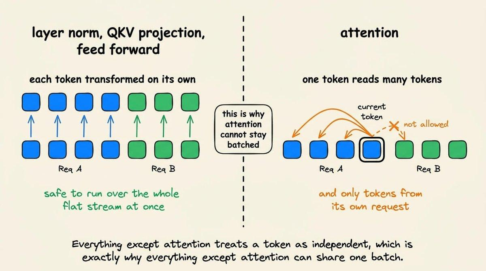
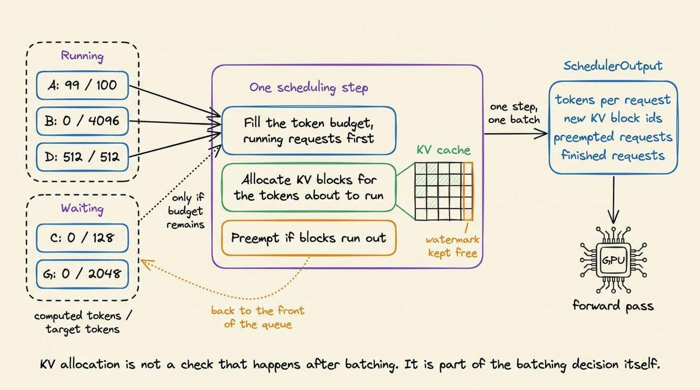
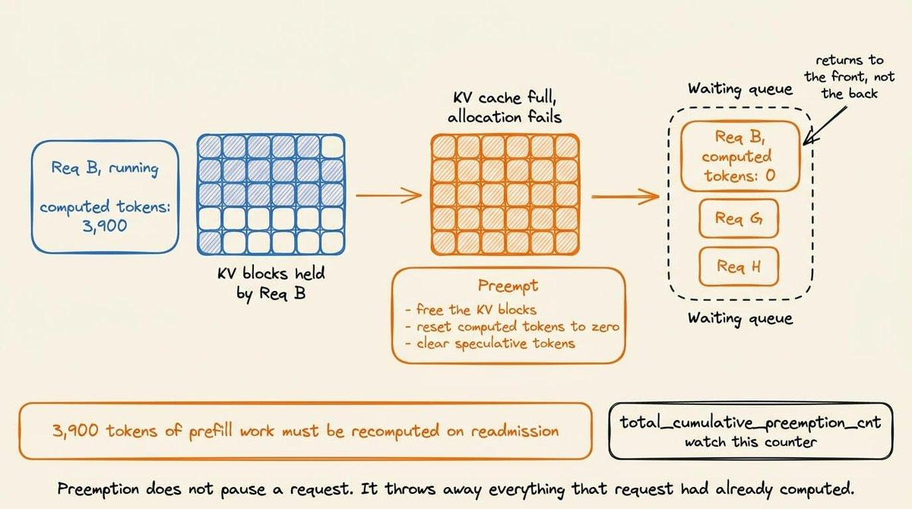
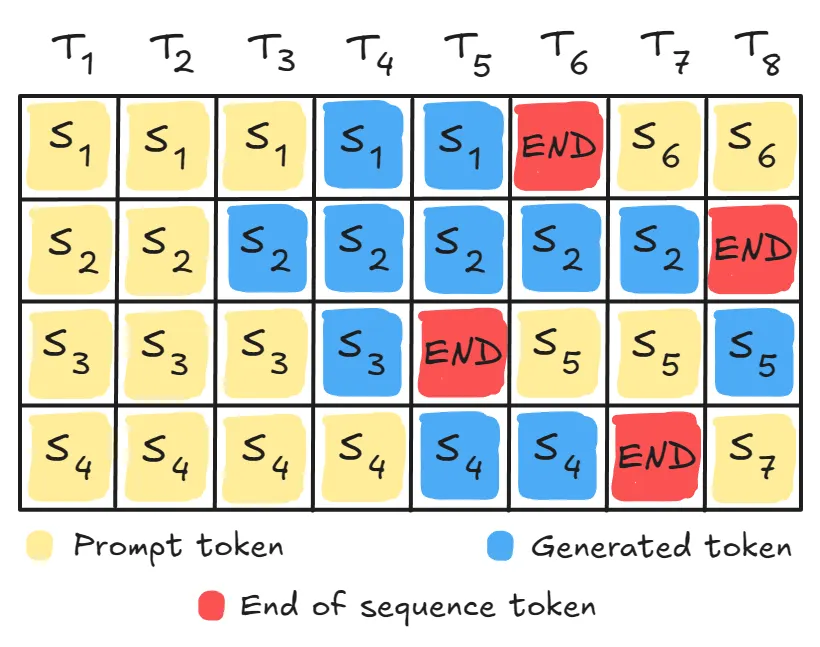
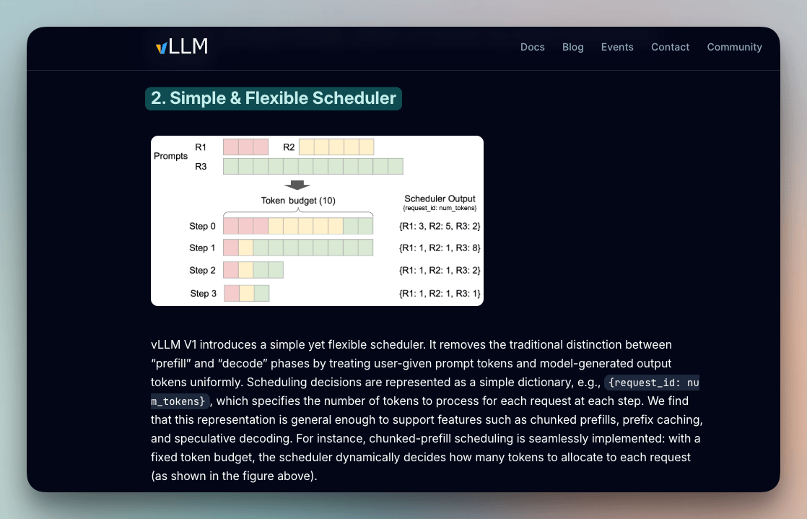
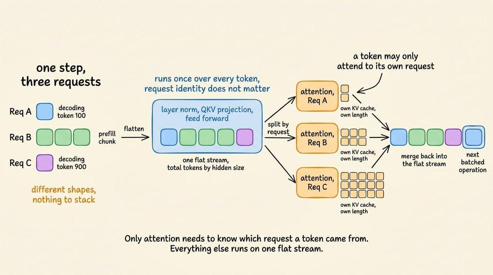
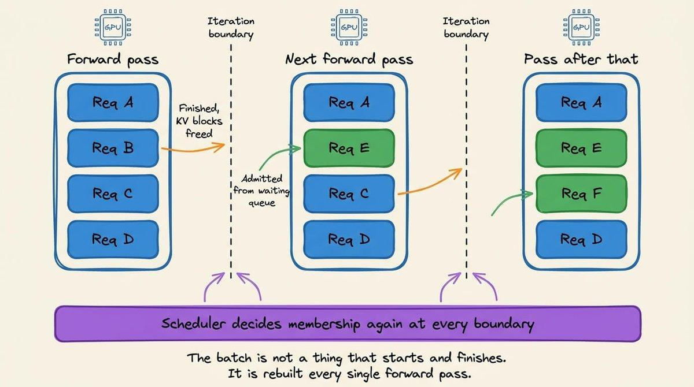
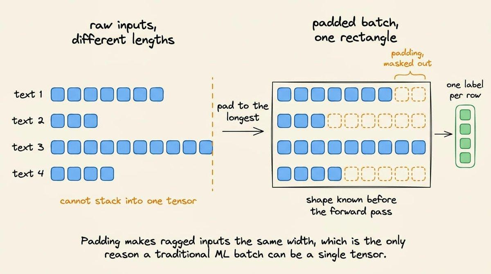
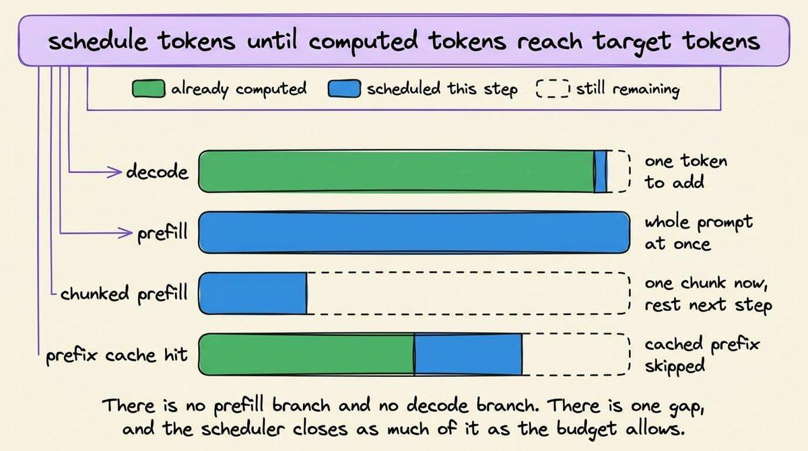

这就是vLLM那23倍吞吐提升背后的技术，也是你今天用的每一个推理引擎里的默认调度器。它的核心只有一句话：不要把batch成员在开始时就定死，而是在每一轮前向传播里重新决定。
这篇文章从传统批处理为什么失效讲起，把一次调度步骤拆成四步，讲清token预算如何同时决定延迟与吞吐，以及「抢占」为什么会让你为同一段prefill付出两三次计算成本。
这就是vLLM那23倍吞吐提升背后的技术，也是你今天使用的每一个推理引擎里的默认调度器。下面把它拆开讲清楚：内部机制、token预算、KV分配，以及那个让你为同一段prefill付两次钱的「抢占」。

在传统的机器学习推理里，一个batch通常被表示成一个矩阵。
如果输入长度各不相同，就把每个输入补齐或截断到同一长度，堆叠成一个张量，通过一次前向传播为每一行生成一个预测。在这种设定下，每一行的成本相同、结束时刻相同，整个工作量在开始之前就已知晓：这里的批处理本质上是一个张量打包问题。
LLM的解码完全不按这套原则运作。在底层，一次前向传播只为每条序列生成一个token，因此一个请求需要多少轮前向，取决于它要输出多少token，而在模型吐出停止符之前，没人知道这个数量。

补齐解决不了这个问题，因为错配不在于输入宽度，而在于每个请求占用GPU的时间长度不同。于是一个在开始时固定的batch，只能以最慢成员的速度前进。

连续批处理正是为了绕开这个问题而出现在大多数推理引擎里的方案，vLLM、SGLang、TGI、TensorRT-LLM都默认启用它。它的核心思想是：把「决定batch成员」这件事从批处理开始时一次，改成每一次前向传播都重新决定；一个完成的请求在下一轮就离开，一个等待中的请求当场补进它的位置，于是没有任何一个槽位会为已经做完的工作白白保留。

支撑这套机制端到端运转的核心，就是连续批处理底下的那个调度器：它是在每一轮前向传播里决定「哪些请求拿到token、各拿多少」的那个循环。下面从问题本身搭起，按顺序走完一个调度步骤，再看机制清楚之后的实测收益。

一个分类器接受定宽输入，返回一个标签；序列模型则补齐到最大长度、再把补齐部分掩掉。无论哪种方式，进去的张量形状已知，出来的张量行数与之匹配。
之所以要做批处理，根本原因是：从HBM里加载模型权重，是每一轮前向传播的固定成本。因此，如果把64行输入堆进一次前向、让这64行共享同一次权重读取，吞吐就会上去。

在实践里提供服务也很直接：填满一个batch、跑完它、返回所有结果、再开始下一个。没有任何请求会把状态带进下一轮前向，也没有任何请求会比它加入的那个batch活得更久。
LLM的解码过程打破了上面讨论的三个假设：每一轮前向对每条序列只生成一个token；KV cache会把状态带进下一轮前向；一个请求需要多少轮，只有在它产出停止符时才知道。
于是，一个30个token就结束的请求，会和一个要跑到400的请求待在同一个batch里；在固定批处理下，它要为全部400步占着自己的槽位，却什么也不产出。GPU为这个大部分空着的batch持续付出完整的权重读取成本。浪费的程度直接随输出长度的差异放大，而在真实流量里，这种差异可能相当大。

要解决这个问题，就得改变服务系统与执行引擎之间的对接方式。本质上，不再是把一个batch交出去、一直等到所有请求完成，而是让调度器只跑一轮迭代、拿回控制权、然后再决定一次。这被称为迭代级调度，它描述的正是连续批处理在底层使用的机制。

一条完成的序列在下一个迭代边界离开，而不是等到整个批处理跑完；一个等待中的请求在同一个边界进入。batch在每一轮前向传播里被重建。

但这件事本身还不够，因为每轮重建batch会带来它自己的问题。比如一个正在prefill 4,096个token的请求，和一个正在解码第900个token的请求，它们并不共享同一张张量形状，没法按通常的方式堆在一起。选择性批处理解决了这一点：它确保批处理只施加在能够承受批处理的算子之上。
在这一步里被调度的每一个token，无论来自哪个请求，都会被展平成一整条形状为「总token数 × 隐藏维」的长序列。

层归一化、QKV投影与前馈网络都独立地作用于每一个token，因此它们既不关心也不需要知道某个token属于哪个请求，可以在整条扁平流上以满效率跑一次。但注意力不能这样工作：一个token只能注意到它自己这个请求里更早的token，而每个请求的KV cache长度各不相同。所以扁平张量会在注意力边界处被切开，注意力针对每个请求、对着它自己的缓存分别执行，输出再合并回这条流，进入下一个可批处理的算子。

在两轮前向传播之间，调度器回答一个问题：接下来哪些请求运行、每个请求拿到多少token。它用四步回答这个问题，这里以vLLM的V1调度器作为参考实现。

第一步，先为这一步固定一个预算：max_num_batched_tokens限定这一步最多可以发出多少token；max_num_seqs限定同时最多有多少条序列在飞。
第二步，正在运行的请求先来认领计算预算。每个请求都带着一个「已经算过多少token」的计数和一个目标计数，调度器发放token，用来缩短请求当前所在位置与它想要到达位置之间的差距，并随着发放扣减预算。
这里调度器本可以合理地保留两条代码路径：一条给prefill，一条给decode，因为prefill处理整个提示词、decode只产出一个token。但在实践中并没有这种切分：prefill与decode看起来是两种不同的活，可调度器看到的是同一个数字：取目标值、减去已经算好的、在预算允许时发出这么多token。

于是一条全新的4,096 token提示词，这个数字就是4,096；一个生成到一半的请求，这个数字就是1。两种情况走的是同一行代码。

分块prefill与前缀缓存也不需要额外处理：如果一条4,096 token的提示词塞不进预算，调度器这一轮先发2,048、下一轮再发另外2,048；如果这4,096个token里有3,000个来自更早请求的缓存，那就只剩1,096个需要发出。
# simplified from vllm/v1/core/sched/scheduler.py
tokens_this_step = min(
request.num_tokens_with_spec - request.num_computed_tokens,
remaining_token_budget,
)第三步，调度器为刚刚分配的token认领KV块。它是在做决定的过程中预留这块内存，而不是决定完之后才去要。一步只有在缓存装得下它产出的内容时才成立，所以当空闲块不够时，调度器会从运行列表里最新的那个请求手中把它们拿走。
第四步，剩下的预算给等待中的请求。那些还没开始的请求，用剩下的token被调度进来；如果运行中的请求已经把预算用光，这一步就不会有新请求启动。之后，调度器交给GPU一份清单：每个请求这一轮跑多少token，以及把这些token写进哪些KV块。
一步的耗时等于它内部token的数量，这让max_num_batched_tokens既是一个吞吐设置，也是一个延迟设置。
补充说明一下这个概念：max_num_batched_tokens是调度器在一次前向传播里可以放入的token总数，按这一步里所有请求累加，它不是单个请求的上限。一个解码请求只贡献一个token，因为它只产出一个；一次prefill贡献多少个提示词token，取决于调度器发给它多少。
大约在2,048这个量级时，没有任何一步会跑得很长，于是token间延迟保持得很紧，但GPU常常吃不饱；大约在16,384时，GPU保持饱和、吞吐上升，但batch里的每个请求都要等一个更长的步。
这个预算设置控制的不只是大小。开启分块prefill（这是V1在可能的场合下的默认行为）后，调度器会先用待处理的decode填满预算，再把剩下的给prefill，塞不下的prefill就被切成块。
当块分配失败时，调度器会释放某个运行中请求的块、把它标记为被抢占、把它的num_computed_tokens归零、清掉它的投机token，再把它放回等待队列的最前面。
归零是真实存在的成本：假设一个请求已经prefill了3,900个token，它回来时这些全都没被保存下来，就必须把3,900个token重新算一遍。V1把重算变成了默认的抢占模式，并把更早的交换（swap）路径整个去掉了。
从外部看，这很像GPU没有余量了：延迟随着流量上升而攀升，加副本看起来是解决办法。

实际发生的是同一段prefill被算了两三遍：请求被抢占、被重新接纳、再被抢占，每一次循环都在重复GPU早就完成的工作。vLLM把它统计在Prometheus的total_cumulative_preemption_cnt里，当p99在流量没有变化的情况下攀升时，这是第一个应该看的指标。
补充一下p99的含义：它是你最慢的那1% 请求所经历的延迟。平均值会掩盖抢占，因为大多数请求永远不会被抢占，问题总是出现在尾部。有三个设置可以改善它：提高gpu_memory_utilization，让更多显存变成KV cache；降低max_num_seqs，让竞争这块内存的序列更少；提高tensor_parallel_size，让权重分散到多张GPU上，从而给每张设备留下更多余量。

以上所有内容最终归结为一个循环：调度器在每一轮前向传播里重建batch、按固定预算发放token、并在做决定的同时预留KV块。这三步动作，决定了你的GPU实际产出多少。
Anyscale在OPT-13B上的基准显示：随着输出长度变得参差，静态批处理会掉到大约81 tokens/s，而vLLM在同一块A100上达到了朴素Hugging Face服务的23倍吞吐。这些提升没有一个来自更快的模型。
所以如果你的问题是吞吐或p99，在动模型之前，先看调度器这一层。抢占计数器通常是最便宜的起点，因为它用一个数字就告诉你：你的KV池是否匹配你所配置的并发量。
参考：https://x.com/_avichawla/status/2087831170423906621